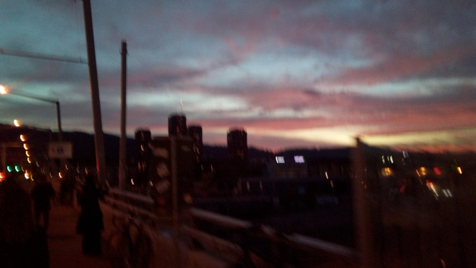
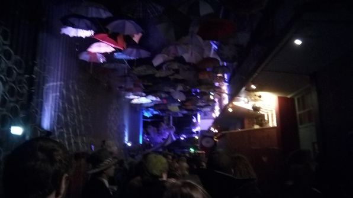

Man! What a day :D 8:15am-4:50am in constant motion.
I met Anna, Abhi and Anna’s friend Erika from her school in the Netherlands, in the kitchen to throw some food in our rucksacks. We took the train thence to Appenzell, for the third time (I love that place). The train ride was pretty and uneventful, enjoyed some conversation and bouncing in and out of sleep.
We arrived and started down the trail to Seealpsee–and Abhi started freaking out! He’d never been on a single hike in his time in Switzerland, and hadn’t ever seen such beautiful trees, streams, and mountains up close.
But soon, his excitement gave way to exertion as we struggled up the steep trail. Egging him on, Anna hauled up the hill ahead of a posse of stragglers.
Seealpsee was reached with many breaks and much struggle. We paused by the beautiful lake, myself collecting a Gandalf staff on the way. Then up the hill! More fitful ascent continued, punctuated with snack breaks (hey, I don’t mind!) Abhi asked everyone coming down how much longer. But finally we were there, at the cliff with its embedded restaurant. We stopped on a sunny rock to chow.
Then we went to the cable car station, on a beautiful windswept hillside. Abhi got to feel the snow.
We got coffee, then hit the cable car, which was a nice ride. We caught an early train back, and guess who we met boarding? Michael, who’d meant to go with us but bought an early-morning ticket before checking with us late-morning people. He regaled us with tales of the incredibly sketchy and dangerous route he’d taken through the snowy upper parts of the mountain.
Stopped at Gossau, grabbed a Quöllfrisch at the Coop, and enjoyed the remainder of the trip. When we arrived in Zurich HB, Michael and I split off, and I caught the train for Hardbrücke, where the Zurich vs FC Basel soccer game was being held. I jumped off into literally the most beautiful sunset I’d seen here:

Arrived at the game; tried to get a ticket next to my Culmann buddies but the section was sold out, so I got a standing ticket instead! #serendipity
The section was INSANE. There were dudes holding giant sparklers and blue, FC-Zurich smoke swirling everywhere.
Everyone was chanting, constantly, one of 4 different songs with different clapping rhythms, and hand gestures:
F-C-Z! F-C-Z!
The inebriation was real. Halftime games featured “slug your way into the bathroom” front and center.
Once I’d survived that, lunacy raged while Zurich held FC Basel, the best football club in Zurich, to a 0-0 draw.
I tried to catch my buddies on the way out, failed, and beat them home on an overcrowded bus.
Culmann was going crazy. There must have been 30 people in the common room, a big group of Italians eating dinner, a full-on liquor table… it was wild. I took a shower, rinsing off the smoke and grit of the football contest. I made myself some eggs and potatoes and chowed down. Nommmm..
After that, it was a blur of foosball and conversation. Camilla (the correct Italian appellation for Mia from previous posts) kept proffering me strange Italian drinks, from a coffee and sambucci to a… some sort of amaretto thing on ice. They were surprisingly delicious.
At some point, I realized I had kitchen duty. Not wanting to miss the big outing, I flew through my duties with incredible speed. This was when I realized that a couple of tall boys returned me to the state of awesome efficiency and hesitation-less decision making that I’d enjoyed in my high school years.
After the kitchen cleaning, a group of us, Camilla, Marya, a few others from Culmann, and two bicycling dudes, one of them an MRI researcher named Alan, set out to the infamous Zurich haunt known as the Hive. A short tram ride away, we were back in Hardbrucke! It was a long walk to the Hive, and there were some directional confusions along the way, but eventually we made it, only to find a queue stretching back to the Stone Age! The alley we waited in was very cool:

We were only a few places back in the queue when we were told it’d be at least 30 minutes before the Hive admitted its next patron. So, we decided to bail. Following Camilla, we made our way to Langstrasse, a street in Zurich famed for its clubs and bars. Camilla and I walked ahead of the pack..
Somewhat eventfully, we arrived at Langstrasse. My mouth gaped open–it was the biggest, open-block party I’d ever seen! (I guess I never went to any of the Greek Week shenanigans at the UW!) There were people EVERYWHERE, thronging outside every bar, smoking and drinking and carrying on like there was no tomorrow. Camilla disdained the place as sad, full of hooligans looking to drown their sorrows rather than have a lovely experience. I didn’t know enough to evaluate, but it was a scene!
At Marya’s urging, we entered a small, lavishly decorated club. The ceiling was full of lightbulbs glowing softly enough that you could see the filament haloed in gold, and in between the lightbulbs were an armada of disco balls. We danced a little bit, I got into it, but then Camilla wanted to go to another club. I went with her; we couldn’t persuade anyone else to go, but nevertheless set off. The other club was very close. The entrance fee was 20 CHF, but it had crazy lights and a fog machine. We danced in there for a good while.
Finally, we headed out and rejoined the group at a shawarma restaurant. I got a shawarma (establishing the day as my most expensive leisure day yet).
Then Federico, Camilla, Anna and I took an Uber back. We rolled into Culmann at about 4:30am, and still, we stayed awake to wait for those who’d decided (crazily) to do some mad tandem biking back. I made tea and we relaxed companionably until the bikers arrived. Then finally, to the void!